MARKET NEWSROOM
The reporting
behind the signals
A visual source ledger for the selected market, connecting original reporting with the current intelligence view.
LEAD REPORTING
Stories setting the frame
The opening stories in the current regional source set.

ABC News · 2026-11-14 00:52:34 UTC
Questions left to answer in wake of Huang's departure
VIEW STORY ↗
ABC News · 2026-11-14 00:46:04 UTC
Australia wins six Youth Olympics medals as African Games hailed
VIEW STORY ↗
ABC News · 2026-11-14 00:28:33 UTC
Regional bands say it's now cheaper to do a gig in London than interstate
VIEW STORY ↗
ABC News · 2026-11-14 00:13:11 UTC
Rope barriers at parliament round out prickly week for government
VIEW STORY ↗MORE HEADLINES
Follow the reporting
The remaining 57 stories in the current source order.
Headlines 005—016 12 stories
 005
005ABC News · 2026-11-14 00:05:46 UTC
↗Litany of missed opportunities in Floreat murder tragedy
 006
006ABC News · 2026-11-13 23:52:23 UTC
↗Man dies after house fire in Geelong suburb
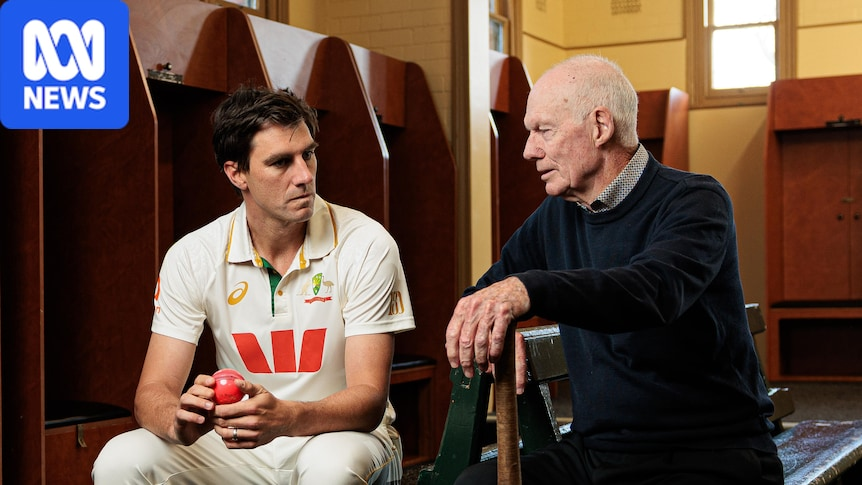
007ABC News · 2026-11-13 23:41:21 UTC
↗Australian cricket urged to stop 'eating itself' as Sandpapergate rolls on
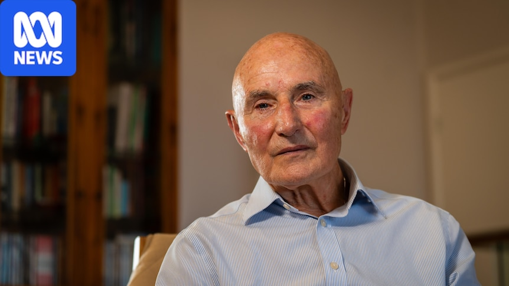
008ABC News · 2026-11-13 22:55:44 UTC
↗009Former NT administrator opens up about being groomed as a child
ABC News · 2026-11-13 22:52:22 UTC
↗010Police seeking witnesses after violent home invasion in Canberra
ABC News · 2026-11-13 22:49:04 UTC
↗Melbourne's 'liveable city' reputation questioned after fatal stabbing
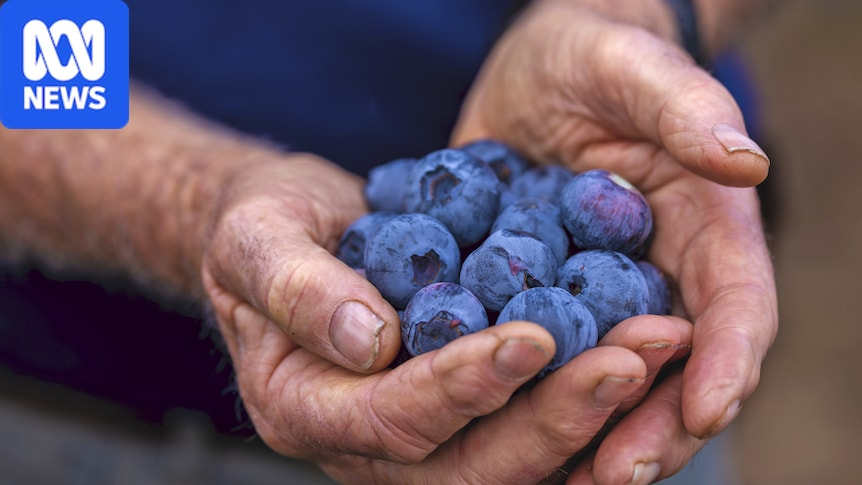
011ABC News · 2026-11-13 22:37:17 UTC
↗012Family-run berry farm looks to AI and automation to ease workforce challenges
ABC News · 2026-11-13 22:12:24 UTC
↗Live: All US departing flights grounded due to communication issues
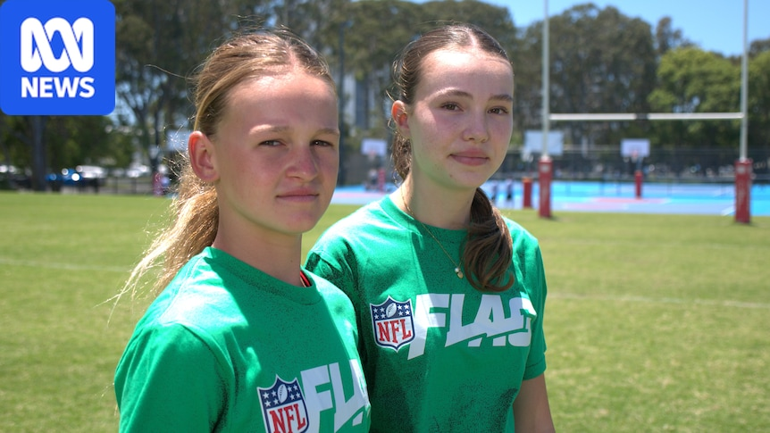
013ABC News · 2026-11-13 22:02:58 UTC
↗Flag football takes flight as young Aussie athletes compete in China
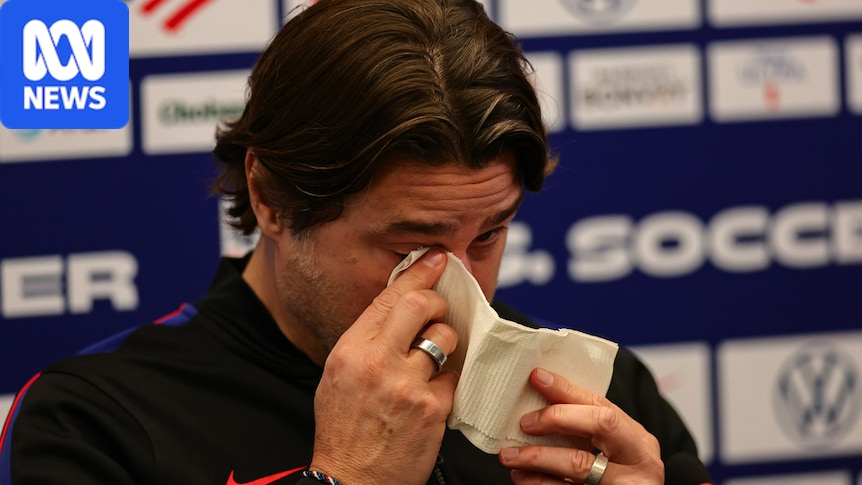
014ABC News · 2026-11-13 22:01:05 UTC
↗Tears for Pochettino as Man Utd turn to former Spurs boss
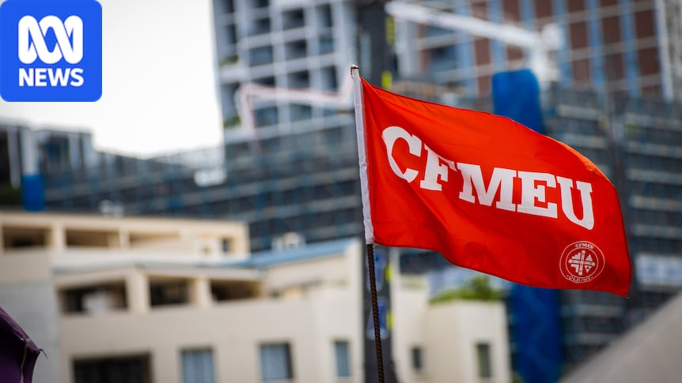
015ABC News · 2026-11-13 22:00:08 UTC
↗016Qld's CFMEU inquiry has delivered a sobering warning ahead of 2032 Olympics
ABC News · 2026-11-13 21:48:22 UTC
↗'Playing with injury' par for course at Wheelchair Rugby League World Cup
Headlines 017—028 12 stories
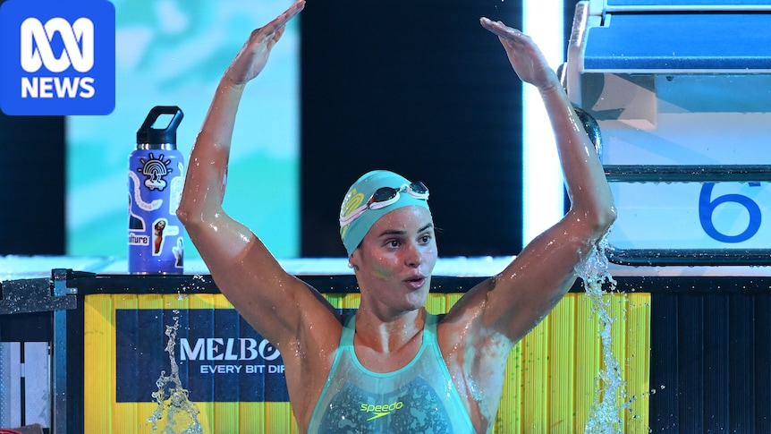
017ABC News · 2026-11-13 21:45:12 UTC
↗McKeown returns, Pallister stars at Swim GP
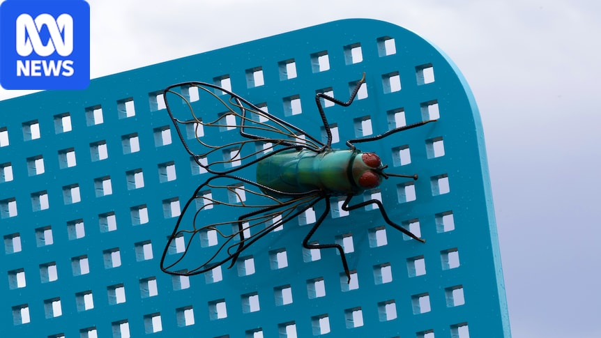
018ABC News · 2026-11-13 21:41:56 UTC
↗The Big Fly Swat unleashed after bar flies' inspired idea
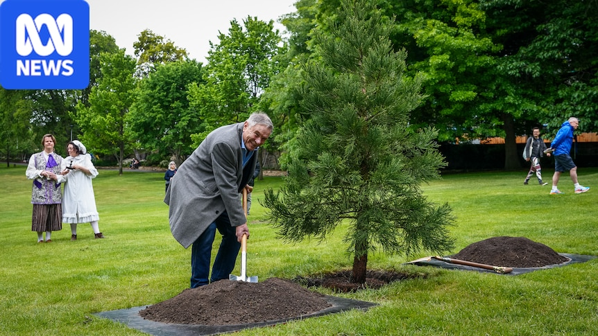
019ABC News · 2026-11-13 21:41:00 UTC
↗Giant sequoias return to Hobart's St David's Park in centenary celebrations
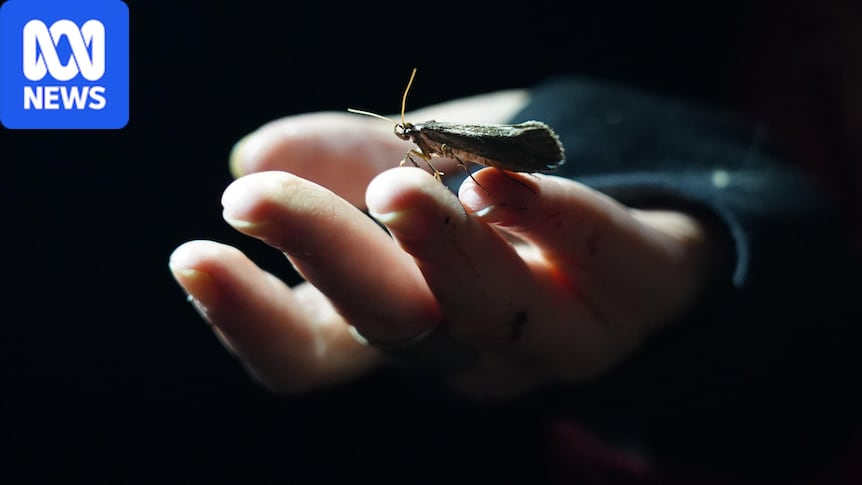
020ABC News · 2026-11-13 21:25:55 UTC
↗Tracking down Tasmania's rare, flightless pandani moth
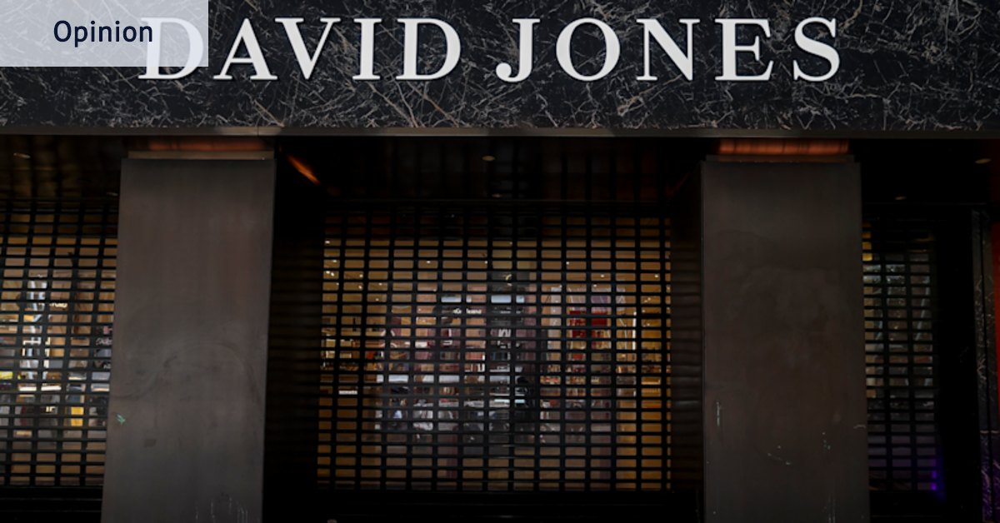
021SMH Business · 2026-11-14 05:30:00+11:00
↗022I worked part-time at David Jones. I know exactly why the business failed
SMH Business · 2026-11-14 05:00:00+11:00
↗How Elon Musk drove the Cybertruck and Tesla’s ambitions off a cliff
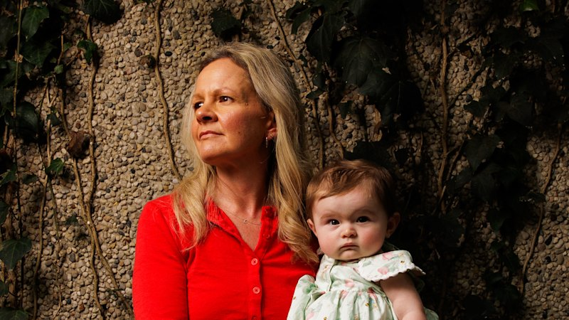
023SMH Business · 2026-11-14 05:00:00+11:00
↗M.J. Bale axed its retail boss while she was on maternity leave. Now she’s fighting back
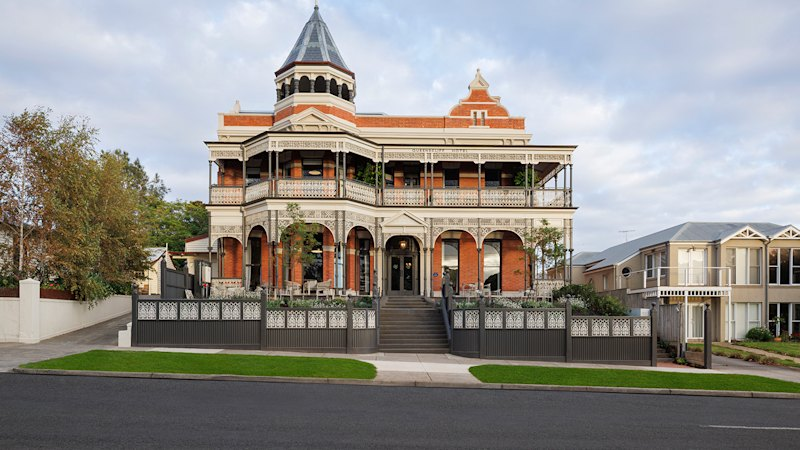
024SMH Business · 2026-11-14 05:00:00+11:00
↗‘Either brave or mad’: A bastion of fine dining gets a sorely needed facelift
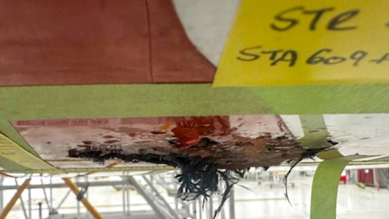
025SMH Business · 2026-11-14 05:00:00+11:00
↗026This Qantas jet was hit by lightning. It’s still grounded two weeks later
SMH Business · 2026-11-14 05:00:00+11:00
↗There has never been another scandal like this
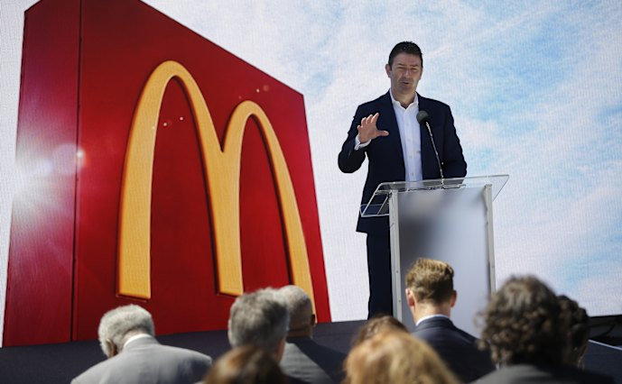
027SMH Business · 2026-11-13 19:10:00+11:00
↗Hall of shame: Jensen Huang joins the list of CEOs brought down by affairs
 028
028SMH Business · 2026-11-13 17:54:53+11:00
↗Australian shares limp across the line to end week higher
Headlines 029—040 12 stories
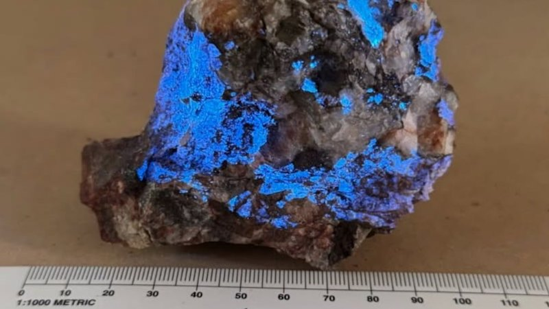
029SMH Business · 2026-11-13 17:25:49+11:00
↗030Right Resources puts tungsten twist on historic NSW goldfields
SMH Business · 2026-11-13 17:09:34+11:00
↗The superchip genius or the big name wildcard? Eight contenders to replace Huang as Nvidia’s CEO
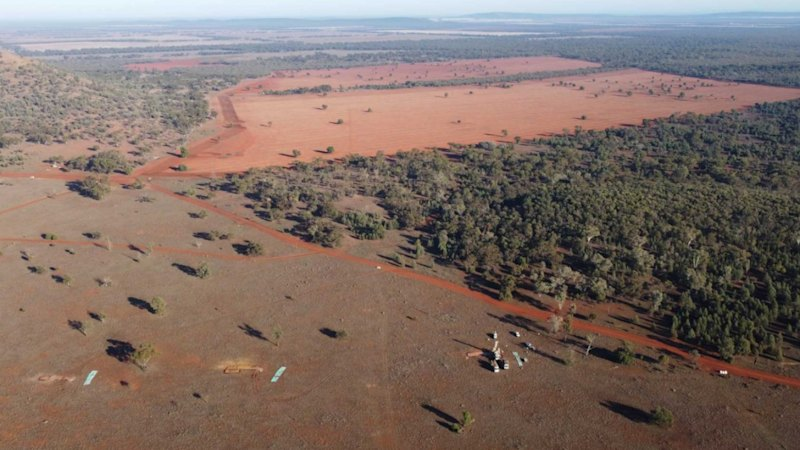
031SMH Business · 2026-11-13 16:52:36+11:00
↗032Australian Gold and Copper lands NSW multi-metal bonanza
SMH Business · 2026-11-13 16:52:24+11:00
↗033Big Hits: Far Northern strikes NT bonanza, AusQuest and Terra Metals
SMH Business · 2026-11-13 16:26:01+11:00
↗ASX Runners of the Week: G8 Education, Clarity, Carnegie & Capability X
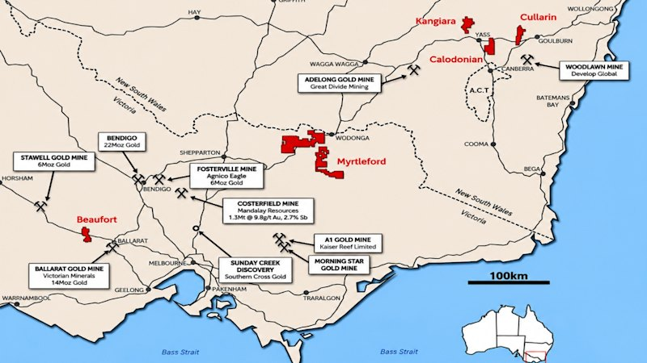
034SMH Business · 2026-11-13 12:32:16+11:00
↗035Advance, Sky cook up $16M float for eastern gold assets
SMH Business · 2026-11-13 11:39:33+11:00
↗036Double Bay dilemma? Luxury second-hand stores are rapidly replacing upmarket boutiques
SMH Business · 2026-11-13 05:11:00+11:00
↗037Nobody reads my job applications anyway. Why should I put the effort in?
SMH Business · 2026-11-13 05:00:00+11:00
↗038We’re supposed to be struggling, yet we’re spending more. Why?
SMH Business · 2026-11-13 05:00:00+11:00
↗039Rupert Murdoch makes a death-defying appearance
SMH Business · 2026-11-13 05:00:00+11:00
↗040Australia’s biggest home builder gets itself ... a bigger home
SMH Business · 2026-11-13 00:00:00+11:00
↗Bowser relief: Petrol prices tumble as global oil cost falls
Headlines 041—052 12 stories
041 044
044 045
045 052
052
The Guardian · 2026-11-14 00:52:48 UTC
↗042Microsoft ‘deeply sorry’ for global disruption that could have billion-dollar impact on Australia
The Guardian · 2026-11-13 17:41:15 UTC
↗043Microsoft outage: company scrambles to fix global issue that took down Outlook and Teams
The Guardian · 2026-11-12 14:00:45 UTC
↗New allegations against convicted rapist Ralph Carr revealed: ‘I was blacking out while saying no’
044The Guardian · 2026-11-11 14:00:51 UTC
↗An end to RBA rate hikes will be good news finally for homebuyers – but maybe less so for workers | Greg Jericho
045The Guardian · 2026-11-11 03:59:03 UTC
↗046David Jones to close half its stores, triggering mass job losses in ‘urgent restructure’
The Guardian · 2026-11-11 01:23:39 UTC
↗047Macquarie Bank to pay $14m penalty after confusing ‘welcome rate’ promotion
MacroBusiness · 2026-11-13 13:01:03 UTC
↗048Weekend Reading & MB Media Appearances
MacroBusiness · 2026-11-13 02:00:44 UTC
↗049Podcast: Will the $2.5 Trillion AI Bet Ever Pay Off?
MacroBusiness · 2026-11-13 01:00:46 UTC
↗Australian homes losing as much as $25,000 a month
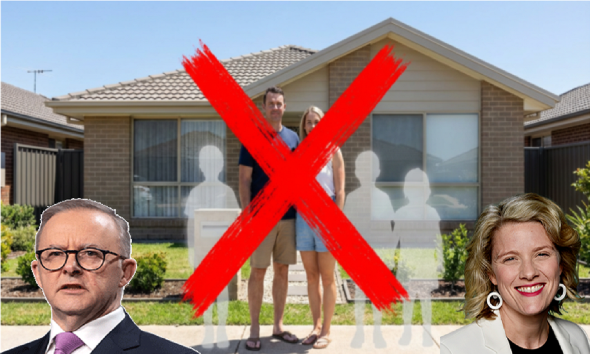
050MacroBusiness · 2026-11-13 00:00:45 UTC
↗051Has Labor helped or hindered first home buyers?
MacroBusiness · 2026-11-12 23:30:01 UTC
↗Buy AI humiliation
052MacroBusiness · 2026-11-12 23:00:19 UTC
↗Global coal demand continues to rise
Headlines 053—061 9 stories
 053
053MacroBusiness · 2026-11-12 22:30:52 UTC
↗054Australian dollar free fall a bad omen
MacroBusiness · 2026-11-12 22:00:00 UTC
↗The war is not over
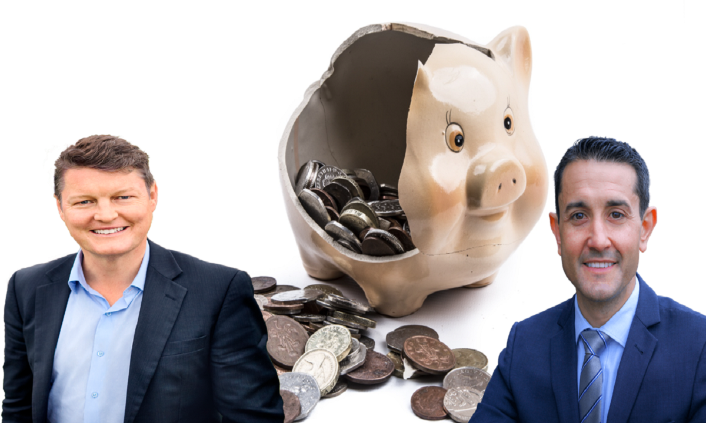
055MacroBusiness · 2026-11-12 21:00:11 UTC
↗Stamp duty bust threatens state budgets
 056
056MacroBusiness · 2026-11-12 13:01:36 UTC
↗057Brisbane and Perth house prices are crashing
MacroBusiness · 2026-11-12 01:00:48 UTC
↗058The end of Australian free speech?
MacroBusiness · 2026-11-12 00:30:41 UTC
↗059Is the RBA worried about AI and jobs
MacroBusiness · 2026-11-12 00:00:02 UTC
↗060Victorian Treasury warns of credit rating downgrade
MacroBusiness · 2026-11-11 23:30:26 UTC
↗061Gas reservation still on track
MacroBusiness · 2026-11-11 23:00:56 UTC
↗